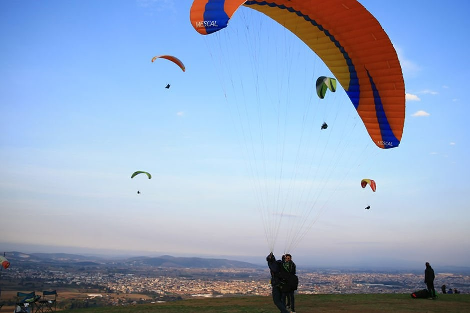

KIRANTEPE

İlimizin en güzel paraşüt ile uçuş yapılabilecek alanlarından bir tanesidir.
Ayrıca bu alan paraşüt tepe diye de bilinir.
Ulaşım kolaylığı, geniş alanı ve büyük şehirlere yakınlığıyla adrenalin tutkunlarının cazibe merkezi haline gelen Kırantepe'de vatandaşların bazıları gökyüzünde manzaranın keyfini çıkarırken bazıları da gökyüzünü renklendiren yamaç paraşütü pilotlarını izlemenin keyfini yaşıyor.
Kırantepe'nin uçuş için bu kadar iyi olmasının en önemli sebebi harika denilebilecek ölçüde bir eğiminin olması ve yeşil ile Sakarya'nın ayaklarınızın altında olmasıdır.
Dönem dönem Temmuz ayı içerisinde geleneksel "Yamaç Paraşütü Festivali"de düzenlenmektedir.